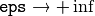

The object detector described below has been initially proposed by Paul Viola [Viola01] and improved by Rainer Lienhart [Lienhart02].
First, a classifier (namely a cascade of boosted classifiers working with haar-like features) is trained with a few hundred sample views of a particular object (i.e., a face or a car), called positive examples, that are scaled to the same size (say, 20x20), and negative examples - arbitrary images of the same size.
After a classifier is trained, it can be applied to a region of interest (of the same size as used during the training) in an input image. The classifier outputs a “1” if the region is likely to show the object (i.e., face/car), and “0” otherwise. To search for the object in the whole image one can move the search window across the image and check every location using the classifier. The classifier is designed so that it can be easily “resized” in order to be able to find the objects of interest at different sizes, which is more efficient than resizing the image itself. So, to find an object of an unknown size in the image the scan procedure should be done several times at different scales.
The word “cascade” in the classifier name means that the resultant classifier consists of several simpler classifiers (stages) that are applied subsequently to a region of interest until at some stage the candidate is rejected or all the stages are passed. The word “boosted” means that the classifiers at every stage of the cascade are complex themselves and they are built out of basic classifiers using one of four different boosting techniques (weighted voting). Currently Discrete Adaboost, Real Adaboost, Gentle Adaboost and Logitboost are supported. The basic classifiers are decision-tree classifiers with at least 2 leaves. Haar-like features are the input to the basic classifiers, and are calculated as described below. The current algorithm uses the following Haar-like features:

The feature used in a particular classifier is specified by its shape (1a, 2b etc.), position within the region of interest and the scale (this scale is not the same as the scale used at the detection stage, though these two scales are multiplied). For example, in the case of the third line feature (2c) the response is calculated as the difference between the sum of image pixels under the rectangle covering the whole feature (including the two white stripes and the black stripe in the middle) and the sum of the image pixels under the black stripe multiplied by 3 in order to compensate for the differences in the size of areas. The sums of pixel values over a rectangular regions are calculated rapidly using integral images (see below and the integral() description).
To see the object detector at work, have a look at the facedetect demo: https://github.com/Itseez/opencv/tree/master/samples/cpp/dbt_face_detection.cpp
The following reference is for the detection part only. There is a separate application called opencv_traincascade that can train a cascade of boosted classifiers from a set of samples.
Note
In the new C++ interface it is also possible to use LBP (local binary pattern) features in addition to Haar-like features.
| [Viola01] | Paul Viola and Michael J. Jones. Rapid Object Detection using a Boosted Cascade of Simple Features. IEEE CVPR, 2001. The paper is available online at http://research.microsoft.com/en-us/um/people/viola/Pubs/Detect/violaJones_CVPR2001.pdf |
| [Lienhart02] | Rainer Lienhart and Jochen Maydt. An Extended Set of Haar-like Features for Rapid Object Detection. IEEE ICIP 2002, Vol. 1, pp. 900-903, Sep. 2002. This paper, as well as the extended technical report, can be retrieved at http://www.multimedia-computing.de/mediawiki//images/5/52/MRL-TR-May02-revised-Dec02.pdf |
Loads a classifier from a file.
| Parameters: | filename – Name of the file from which the classifier is loaded. |
|---|
Checks whether the classifier has been loaded.
Loads a classifier from a file.
| Parameters: | filename – Name of the file from which the classifier is loaded. The file may contain an old HAAR classifier trained by the haartraining application or a new cascade classifier trained by the traincascade application. |
|---|
Reads a classifier from a FileStorage node.
Note
The file may contain a new cascade classifier (trained traincascade application) only.
Detects objects of different sizes in the input image. The detected objects are returned as a list of rectangles.
| Parameters: |
|
|---|
The function is parallelized with the TBB library.
Note
Groups the object candidate rectangles.
| Parameters: |
|
|---|
The function is a wrapper for the generic function partition() . It clusters all the input rectangles using the rectangle equivalence criteria that combines rectangles with similar sizes and similar locations. The similarity is defined by eps. When eps=0 , no clustering is done at all. If  , all the rectangles are put in one cluster. Then, the small clusters containing less than or equal to groupThreshold rectangles are rejected. In each other cluster, the average rectangle is computed and put into the output rectangle list.